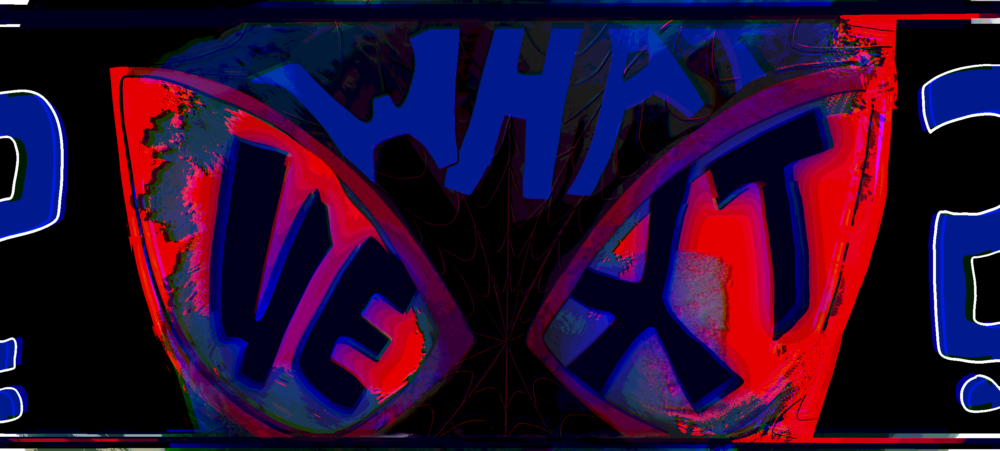

Here is the trailer for the first movie as a small recap
| Character | Loss of People | Guardian's death |
|---|---|---|
| Peter (The Amazing Spider-Man) | Gwen | Uncle Ben |
| Peter (MCU) | Parents | Aunt May |
| Miles Morales | Uncle Aaron | ??? |
Additionally, they all have some connection to spiders.
His story already had it's conflict, rising action, climax, and resolution.
Losing his uncle hurt him, and he learned a lesson, the lesson all Spider-People receive:
But...
What Next?
We know that Beyond The Spider-verse Exists so clearly his story is not over.
This gives Miles a chance to lose his parents, and truly become what is known in our world, "Spider-Man."
He says in the trailer, "everyone keeps telling me how my story is supposed to go"
It must be noted that, he is a fictional character, and who are fictional character's stories written by?
Creators.
But first let us watch one of the trailers for Across The Spider-Verse
Whatever the creators write, becomes fate, it becomes what is "canon."
The 1st movie, Into the Spider-Verse, takes place about a year in the universe, before Across The Spider-Verse.
This means that what happened then, should be canon, as it was finalized, and dispersed as a complete film.
However, the 2nd movie seems to play on the fact that Miles was, 1: a mistake because he was bitten by a spider from another dimension, and 2: he either shouldn't/can't be spider-man, until something traumatic happens again, to allow him to be "Spider-man."
Without the 3rd movie to explain any plot-holes, I believe this doesn't make sense.
There is a spider-plush. A spider-cat. The name of "Spider-" anything, likely exists. There are so many differences that even the smallest connection of "interacted with some form of a spider" allows anyone to be a spider-person.
If he really was an anomaly, he would have caused the universe to end, by taking the place of the other Spider-Man who died.
Furthermore, even before that, if he hadn't been there when the 1st Spider-Man was fighting Green Goblin, the fight would've been won, and there would be no multiversal Travel at that time. If this is true, the moment the 1st Spider-man died, should've caused the world to collapse.
With all this evidence that Miles should be Spider-Man and everything he does is canon, i'd like to propose an alternative idea for the storyline of Across The Spider-Verse.
Don't get me wrong, I love the movie, and the plot, but take this as a "headcanon" of sorts, where Miles ends up being an actual anomaly.
| Conflict | Rising Action | Climax | Resolution |
|---|
| © All Art By: Lily Luo |
|---|